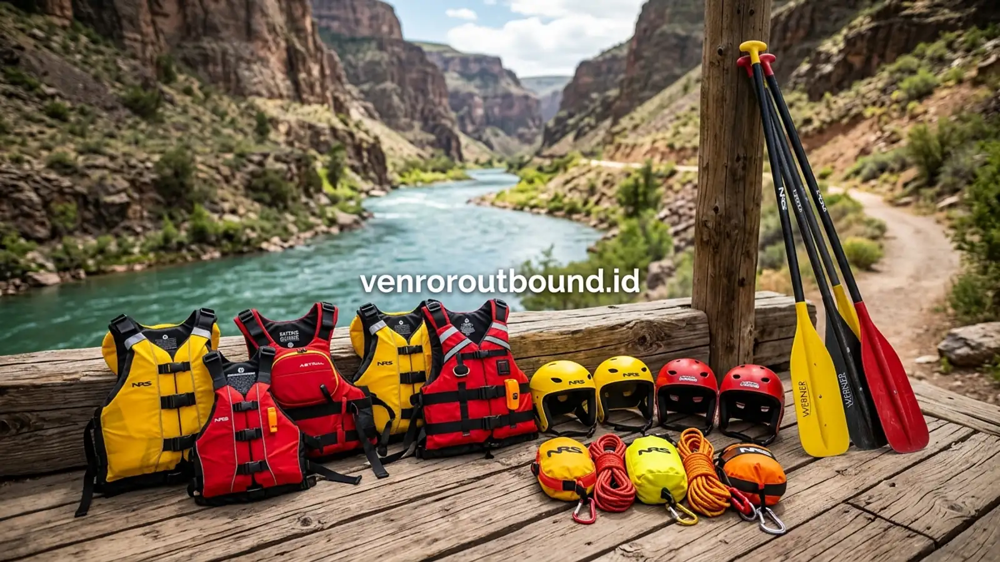

1. Dilema Panitia Outbound: Menentukan Sensasi Petualangan yang Pas
Jawaban singkat: Menentukan pilihan antara arung jeram (rafting) dan petualangan jeep (offroad) bergantung pada profil peserta. Outbound plus rafting sangat ideal melatih kerja sama tim dinamis di air, sementara offroad melatih ketangguhan mental menghadapi medan terjal darat. Pilihan terbaik dicapai dengan menyesuaikan tujuan kegiatan, usia peserta, dan tingkat tantangan yang diinginkan.
Bagi panitia outbound perusahaan, merancang agenda rekreasi luar ruang yang memuaskan ekspektasi seluruh peserta kerap menjadi tantangan tersendiri. Ketika opsi simulasi lapangan standar dirasa kurang menantang, dua aktivitas petualangan alam terbuka yang paling sering menjadi pertimbangan utama adalah arung jeram (rafting) dan ekspedisi jeep offroad 4x4.
Keduanya menawarkan lonjakan adrenalin, pemandangan lanskap alam yang memukau, serta kesempatan membangun kebersamaan di luar suasana kantor. Namun, masing-masing aktivitas memiliki karakteristik mekanis, tuntutan fisik, dan dinamika interaksi yang sangat berbeda. Mengetahui perbedaan mendasar ini adalah kunci agar acara gathering berlangsung sukses, aman, dan meninggalkan kesan mendalam bagi seluruh staf.

Team Building vs Fun Games: Mana yang Tepat untuk Acara Kantor?
Panduan komparasi format simulasi luar ruang sesuai tujuan kegiatan dan karakter peserta.
2. Mengenal Karakteristik Arung Jeram (Rafting)
Arung jeram adalah aktivitas mengarungi aliran sungai berarus deras menggunakan perahu karet khusus bersama regu berisi 4 hingga 6 orang. Dalam perahu, setiap peserta memegang dayung dan dituntut mendengarkan instruksi pemandu (skipper) secara serentak.
Fokus pengalaman utama dari program outbound plus rafting meliputi:
- Sinkronisasi dan Komunikasi Spontan: Perahu hanya dapat bermanuver melewati jeram dan bebatuan jika seluruh kru mendayung maju, mundur, atau beralih posisi secara kompak dalam hitungan detik.
- Tantangan Elemen Air: Sensasi cipratan air dingin, pusaran jeram alami, dan pemandangan tebing sungai menciptakan pengalaman sensorik yang sangat menyegarkan pikiran.
- Tingkat Keterlibatan Fisik Aktif: Peserta terlibat langsung menggerakkan perahu sepanjang rute sungai berdurasi 1,5 hingga 2,5 jam.
3. Mengenal Karakteristik Ekspedisi Jeep Offroad
Berbeda dengan rafting yang berbasis di air, offroad mengajak rombongan menaiki kendaraan berpenggerak empat roda (4WD) melintasi rute perbukitan, perkebunan teh/pinus, kubangan lumpur, hingga jalur berbatu terjal.
Karakteristik penting dari petualangan offroad mencakup:
- Sensasi Guncangan dan Ketahanan Mental: Menikmati manuver pengemudi profesional saat melibas kemiringan ekstrem dan trek berlumpur memberikan sensasi ketegangan tanpa menuntut kayuhan fisik peserta.
- Eksplorasi Panorama Jalur Darat: Rute offroad menjangkau spot-spot tersembunyi di puncak perbukitan atau air terjun yang tidak dapat diakses kendaraan biasa.
- Kebersamaan Intim per Mobil: Kapasitas 3–4 orang penumpang per jeep menciptakan obrolan cair dan tawa akrab antarrekan satu kendaraan.


Cara Ampuh Menghilangkan Kejenuhan Karyawan Setelah Rilis Projek Besar
Strategi pemulihan energi tim kerja melalui program rekreasi aktif satu hari di alam terbuka.
4. Matriks Perbandingan Komprehensif: Rafting vs Offroad
Berikut adalah tabel perbandingan untuk membantu tim panitia memetakan kesesuaian aktivitas dengan profil peserta kantor:

Vendor Outbound Perusahaan di Batu Malang: Panduan SOP & Legalitas
Standar operasional prosedur dan kelaikan fasilitas petualangan arung jeram serta jeep offroad.
5. Faktor Keamanan dan Prosedur Standar Operasional (SOP)
Baik rafting maupun offroad tergolong aktivitas wisata petualangan berisiko terkontrol. Kunci utama keselamatan bergantung pada kepatuhan terhadap SOP operator:
- Standar Perlengkapan Rafting: Wajib menggunakan life jacket (pelampung) berdaya apung tinggi, helm pelindung kepala, dayung standar, serta kehadiran skipper bersertifikat di setiap perahu dan tim rescue di titik jeram kritis.
- Standar Armada Offroad: Kendaraan 4WD wajib menjalani uji kelaikan berkala (rem, roll bar pengaman kabin, sabuk keselamatan, kondisi ban pacul) dan dikemudikan oleh driver lokal berpengalaman yang menguasai kontur jalur.
6. Menentukan Pilihan Terbaik untuk Tim Perusahaan Anda
Tidak ada pilihan yang mutlak lebih unggul antara rafting dan offroad. Keputusan terbaik adalah yang paling selaras dengan komposisi usia peserta, kesiapan fisik, serta sasaran acara yang ingin dicapai manajemen.
Jika prioritas utama adalah melatih sinkronisasi gerak dan kerja sama langsung dalam memecahkan rintangan alam, rafting adalah opsi yang sangat bertenaga. Namun, jika tim menginginkan petualangan santai berpanorama megah yang dapat dinikmati bersama oleh staf dari berbagai rentang usia, offroad jeep adalah alternatif yang sangat menarik.
Bingung Memilih Rute Petualangan yang Tepat?
Tanyakan rute offroad dan arung jeram teraman untuk tim Anda di +62 82211221909. Kami siap membantu memetakan pilihan terbaik.
Konsultasi via WhatsAppPertanyaan Sering Diajukan (FAQ)

Arby Ardiansyah
Praktisi pengembangan SDM dan perancang program experiential learning dengan pengalaman lebih dari 8 tahun memfasilitasi ratusan kegiatan outbound korporat, BUMN, dan wisata petualangan di seluruh Jawa Timur.